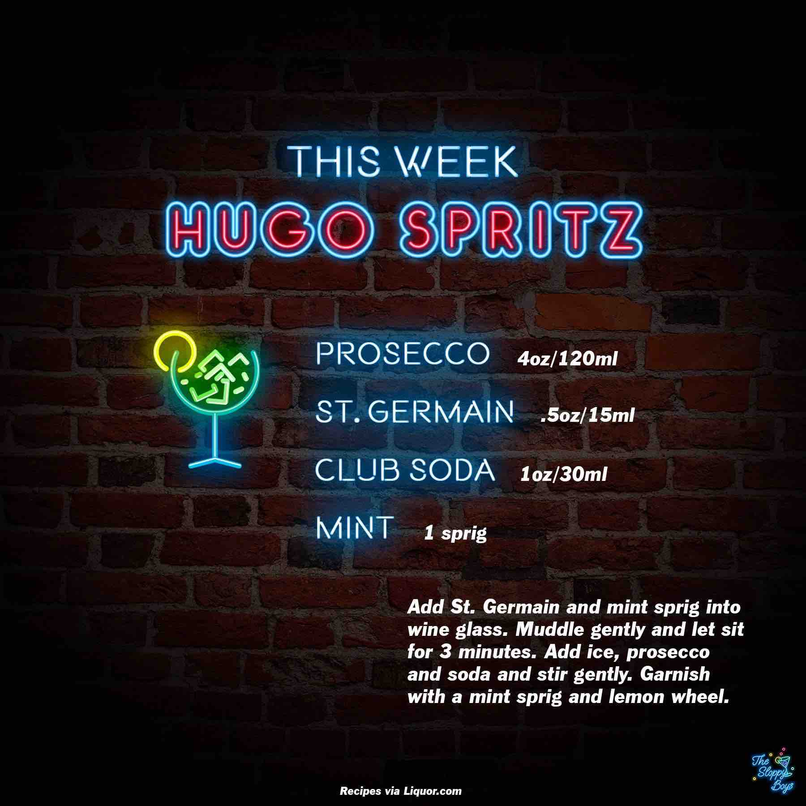

Hugo Spritz
Ingredients
- Prosecco (4oz/120ml)
- St. Germain (.5oz/15ml)
- Club Soda (1oz/30ml)
- Mint (1 sprig)
Steps
- Add St. Germain and mint sprig into wine glass.
- Muddle gently and let sit for 3 minutes.
- Add ice, prosecco and soda and stir gently.
- Garnish with a mint sprig and lemon wheel.
Notes